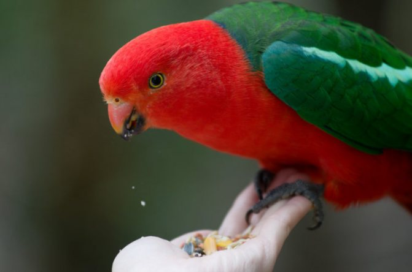

 В нашей клинике доступен обширный набор услуг ветеринаров для птиц направленный не только на постановку диагноза и лечение, но и предотвращение заболеваний, гигиену питомца.
Если вы ищете надежную и ответственную ветеринарную клинику для птиц в Волгограде, лечебницы «Лапа» всегда готовы предложить свою помощь. У нас работают опытные орнитологи, которые ставят диагнозы с высокой точностью и применяют наиболее эффективные методики лечения.
Первичный осмотр у врача:800р===>Заказать услугу
Вторичный осмотр у врача:600р===>Заказать услугу
Подрезка клюва:300р===>Заказать услугу
Рентген:800р===>Заказать услугу
Помощь при задержании яйца:500р===>Заказать услугу
Вакцинация:от 800р===>Заказать услугу
Наша клиника находится по адресу: г. Волгоград, Дзержинский район, ул. Прямая, 1.
Телефон - 8(8442)12-34-56.
Время работы: будние с 9.00 до 18.00, с 9.00 до 16.00 в суубботу и воскресенье.
Уточнить стоимость услуг и узнать дополнительную информацию можно в наших соцсетях ВКонтакте. Много полезного о питомцах рассказывают наши специалисты на YouTube канале.
«Лапа» - ветеринарная клиника в Волгограде, где с 2009 года оказывают эффективную помощь животным. Доверяйте жизнь питомца опытным и квалифицированным ветеринарам.